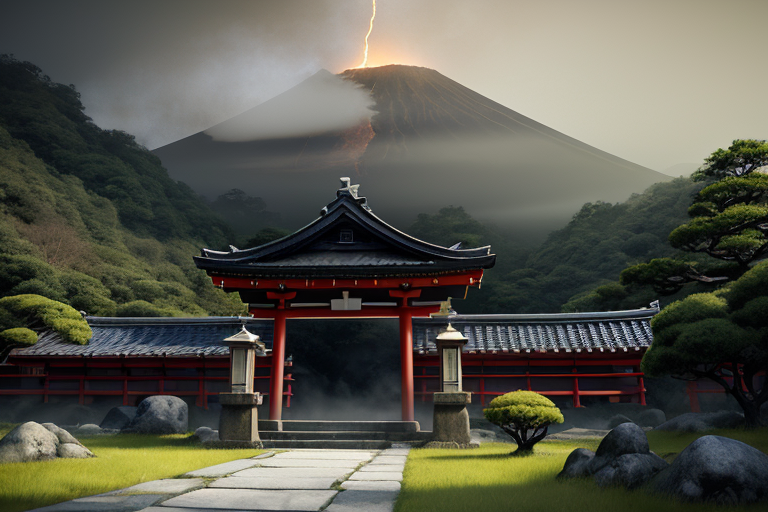
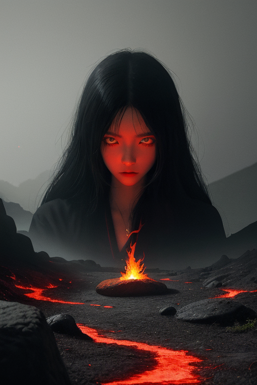
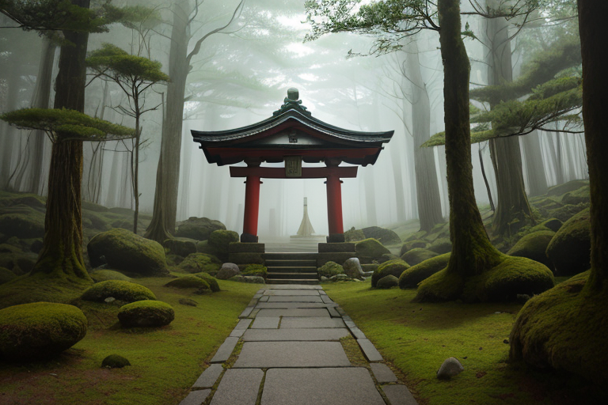
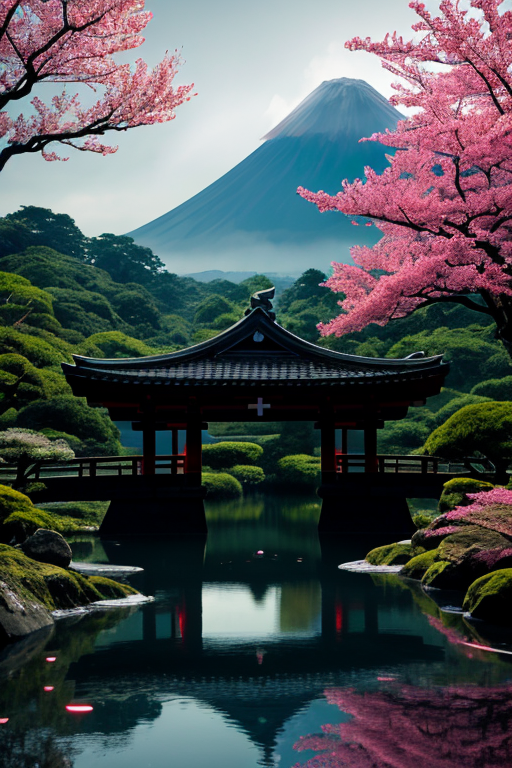

第一章 現実の鹿児島
あなたはまだ気づいていない。この土地にも、王がいることを。
霧島神宮の森は深い静寂に満ちていた。苔むした石段を登る参拝者の足音さえ、この濃密な空気に吸い込まれていく。御神木の根元に手を当てる老婆の目には、祈り以外の何物も映っていない。ここでは、すべての音が内へと向かう。風のざわめきも、鳥のさえずりも、自らの内面に響く前に、この森の静寂によって濾過される。
その静寂の底で、地は絶えず動いている。桜島のマグマだまりは、今この瞬間も膨張と収縮を繰り返す。仙巌園から望むその山容は、穏やかな朝靄に包まれていても、その内部では変革のエネルギーが渦巻いている。静と動。表層の平穏と、深部の激流。この矛盾を抱えながら、鹿児島は息づいている。
参道の石畳に、ほんのわずかだが、昨日までなかった小さなひび割れがあった。誰も気に留めないその亀裂は、地の微かなうめきであり、また、何かが生まれようとする胎動の証でもあった。

第二章 歪みの兆候
霧島神宮の森は、深い静寂に満ちていた。苔むした巨岩と杉の木立が織りなす空間は、祈りが千年分、沈殿したかのようだ。しかし、サツマリア・リボルトは、その静寂の底を流れる微かな「ずれ」を感知していた。参拝者たちが手を合わせるたび、願いという名のエネルギーが放出される。通常、それは森の静けさに吸収され、調和される。だが今、いくつかの願い――あまりに切実で、あまりに激しい覚悟を伴った願い――が、森の均衡をかすかに揺さぶっていた。それは、知覧の特攻平和会館に蓄積された、若き決意のエネルギーと共鳴する、鋭い振動だった。
「祈りにも、重さがあるんだな」
リボルナが呟いた。強気な彼女の声にも、稀に慎ましさが滲む。彼女は地熱の均衡を司る。熱も、祈りも、目に見えぬエネルギーだ。過剰な熱は噴火を招く。過剰な祈りは、人の心の地殻にひびを入れる。
「破壊的なエネルギーを、創造へと転換する。それが、我々の調整だ」
王は答えた。その目には、薩摩が維新という変革の波に身を投じた時、そして西南戦争で散った者たちの、相反する覚悟が映っている。変革は常に、古い何かを壊す。その過程で失われるものの重みを、この土地は知りすぎていた。彼の役目は、その「ずれ」が大いなる亀裂とならぬよう、ほんの少し、方向を修正すること。祈りの奔流を、静かな湖へと導く微調整。

第三章 沈黙の対峙
霧島神宮の森は、深い静寂に包まれていた。苔むした石段を登りきった王は、本殿の前で立ち止まる。ここは、天孫降臨の地。日本の始原に触れる場所だ。彼の内側では、二つの声がせめぎ合っていた。一つは、歪みを力に変えよという革命の声。もう一つは、静寂こそがすべてを育むという、この森の声だ。
西南戦争で散った若者たちの覚悟は、創造だったのか、破壊だったのか。彼らの祈りは、新たな国の礎となった。しかし、その過程で失われた薩摩の誇りと、無念は消えない。王の手は微かに震えた。彼の調整は、時に破壊の勢いを削ぎ、創造の芽を摘むことにもなりうる。その一線は、あまりにも細い。
「覚悟とは、答えのない問いを抱き続けることか」
彼は目を閉じた。神宮の静寂が、内なる奔流を少しずつ沈めていく。破壊と創造は、表裏一体。彼に許されたのは、その均衡を、ほんの一瞬、ほんの少しだけ、より多くの命が輝く側へ傾けることだけなのだ。
第四章 妖精との対話
霧島神宮の奥、地熱の仄かな温もりが漂う森の一角で、リボルナは静かに祈っていた。彼女の手から放たれる微光は、深い地盤の軋みをなだめるように、ゆっくりと拡散していく。
「祈りとは、調整のための『意思』です」
彼女は振り返らずに言った。
「私たちは力を行使できません。ただ、この土地の『想い』を集め、整え、流れを変えるきっかけを作るだけ。破壊的なエネルギーを、創造の時間へとほんの少しずらす。それが革命の本質だと、私は考えています」
サツマリアが近くの岩に腰を下ろす。桜島の噴煙が遠くに立ち上る。
「西南戦争の無念も、特攻の悲しみも、この土地から消えない。それらは『歪み』そのものだ」
「ええ。でも、王様。それらの想いが、ただの破壊のエネルギーに終わらなかったのはなぜでしょう？」
リボルナの声は静かだった。
「誰かが、その痛みを、未来への『覚悟』に変える祈りを、絶やさなかったから。私たちの仕事は、その『変容』の一瞬を、ほんの少しだけ手助けすること。破壊をゼロにはできなくても、創造へ向かう魂の安定を、一呼吸分、支えることはできるのです」
風が梢を揺らし、古い杉の葉がそっと舞い落ちた。

第五章 微調整と余韻
知覧特攻平和会館の庭。水を湛える三角池の水面に、桜島の噴煙が静かに映る。サツマリアは、ここに集い、散った若者たちの「覚悟」の残響を、微かに感じ取っていた。それは破壊への衝動ではなく、未来を信じるが故の、痛みを伴う決断の波長だ。
彼は目を閉じる。王国の力は、地殻の歪みをなだめる地熱均衡だけではない。この土地に蓄積された、あまりにも濃密な「覚悟」の感情。それが無秩序な破壊衝動へと暴走しないよう、精神的な均衡もまた、静かに調整し続けていた。西南戦争の悲劇も、維新という変革の痛みも、すべては「創造」への過渡期における、激しい精神の振動だった。
彼は手を挙げる。指先からは、目に見えない微細な波紋が拡がり、過去から連なる痛みの連鎖を、ほんの少しだけ和らげる。破壊を消すことはできない。しかし、その痛みが、新たな創造への「祈り」へと変容する一瞬を、この静寂の中で支えること。それが、革命王に与えられた、最も静かな役目だった。
水面の噴煙の影が、ゆっくりと揺らいだ。
あなたの町にも、王がいる。